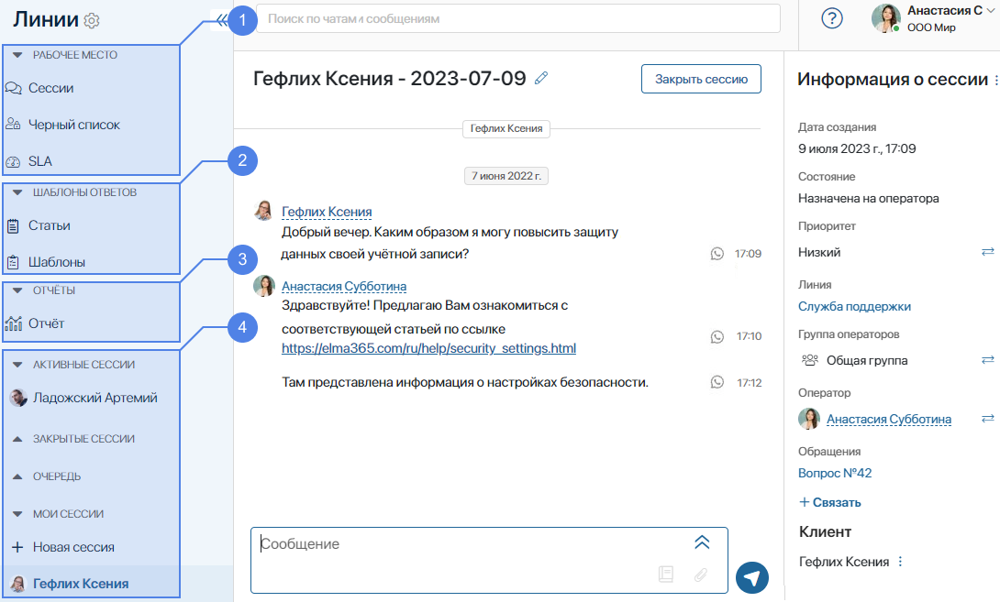

Here is the list of the main terms you may encounter while working with the Live Chats workspace:
- BRIX Service. A system solution that consists of the Live Chats workspace.
- Live chat. A tool used by operators to process requests from users made via different communication channels.
- Channel. A source of messages sent to a live chat. A channel can be:
- Internal. Messages are sent by users in the BRIX interface, that is, by the company’s employees.
- External. Messages are sent to the Live Chats workspace from instant messengers, for example, Telegram.
- Session. It is created when a user sends a message to a live chat. For each session, an operator is assigned. This user communicates with the person who wrote to the live chat.
- Operators. Company employees who process requests in live chats.
- Supervisors. Employees who oversee the work of operators. They have access to all sessions, and they can assign operators to new requests.
- Internal user. A company employee who can write to a live chat from the Messages workspace in BRIX.
- External user. A user who contacts the company in a messenger or by email.
- Reader. A company employee who can view messages in sessions using the Live Chat Messages widget placed on an app form.
How the workspace is organized
The Live Chats workspace looks as follows:

- The My Desk section contains:
- The Sessions app that stores a list of all sessions created in the system. By default, the app is available only to users included in the Administrators group. You can grant access to operators and live chat supervisors so that they can view the sessions available to them, as well as unlock sessions that have been marked as spam. In addition, the administrator can export session parameters here.
- The Blocklist app that contains rules for locking user accounts.
- The SLA app, in which the deadlines for processing messages are regulated and notifications are set when these deadlines are missed.
- Response templates. In these apps, you can add pre-prepared responses to so that the operator can use them to reply to clients. The Response templates section includes the following apps:
- Articles. Entries with links to the web resources of your company (for example, to your website or reference materials).
- Templates. Ready-to-use responses to typical questions asked by users.
- Reports. Here you can analyze the work of your chat support center. Two categories of reports are available by default:
- Operators’ Performance. Shows individual metrics for each operator in a live chat.
- Live Chat Performance. Shows the overall efficiency and load of live chats.
- A list of all sessions in live chats that operators and supervisors have access to. Sessions in each live chat are divided into the following groups:
- Active sessions. All sessions in a live chat. This group is only available to the live chat supervisors.
- Closed sessions. Sessions closed by operators.
- Queue. New sessions without an assigned operator.
- My sessions. Sessions that the current user is responsible for. Here you can see the +New session button. An operator can use it to create a new session with an external user if one of the available messengers or email is connected to the live chat.
Please note that the operator cannot create a new session while in Offline status.
In the center, you can see the session page. It shows messages sent by the user and the operator’s replies. On the right, you can see information about the session.
Was this helpful?
Found a typo? Select it and press Ctrl+Enter to send us feedback